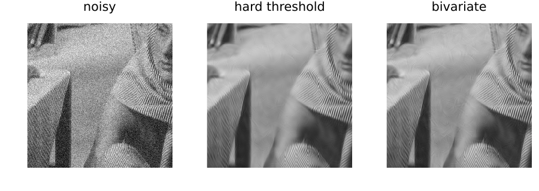

Denoise an image with the NSCT
This guide removes white Gaussian noise from an image by shrinking the coefficients of the nonsubsampled contourlet transform (NSCT). The NSCT suits denoising because it commutes with circular shifts: a shifted image gives shifted subbands, so the result does not depend on where edges fall on a sampling grid. Two estimators are shown: a hard threshold per subband and the bivariate shrinkage of Sendur & Selesnick (2002).
Noisy image and transform
using Contourlets, TestImages, ImageCore, Random, Statistics, Plots
Plots.default(show = false)
ref = Float64.(Gray.(testimage("barbara")))[1:512, 100:611]
σ = 0.08 # noise standard deviation
noisy = ref .+ σ .* randn(Xoshiro(11), size(ref))
psnr(x) = 10 * log10(1 / mean(abs2, x .- ref)) # pixel values lie in [0, 1]
t = NSCT(scales = 3, direction_levels = [3, 3, 3])
ws = make_workspace(t, ref) # reused by every call below Downloading artifact: imagesSubband 1 is the lowpass image; the others are directional subbands, named by subband_layout. The transform is not orthogonal, so white noise of standard deviation σ has a different standard deviation in each subband. Transforming unit-variance noise once measures that factor:
noise_gain = let c = analyze(t, randn(Xoshiro(2), size(ref)); workspace = ws)
[std(subband(t, c, i)) for i in 1:nsubbands(t, size(ref))]
endHard thresholding
Set every directional coefficient whose magnitude is below k σ noise_gain[i] to zero, keep the rest, and keep the lowpass image:
function hard_threshold(x; k = 3)
c = analyze(t, x; workspace = ws)
for i in 2:nsubbands(t, size(x))
sb = subband(t, c, i)
λ = k * σ * noise_gain[i]
sb .= ifelse.(abs.(sb) .>= λ, sb, 0)
end
return synthesize(t, c; workspace = ws)
endBivariate shrinkage
Large coefficients of an edge persist from one scale to the next coarser one, while noise does not. Bivariate shrinkage (Sendur & Selesnick 2002) shrinks a coefficient $y_1$ according to both its own magnitude and that of its parent $y_2$, the coefficient at the same position and direction one scale coarser:
\[\hat w_1 = \left(1 - \frac{\sqrt{3}\,\sigma_n^2}{\sigma_s\,\sqrt{y_1^2 + y_2^2}}\right)_{+} y_1,\]
where $\sigma_n$ is the noise standard deviation in the subband and $\sigma_s$ the signal standard deviation, estimated in a 7 × 7 window around each coefficient (Sendur & Selesnick's local variance estimate) as $\sqrt{(\overline{y_1^2} - \sigma_n^2)_+}$. With the same number of directions at every scale, the parent has the same direction index. Coefficients of the coarsest scale have no directional parent and use $y_2 = 0$.
# Mean over a w × w window around each pixel, with circular borders.
local_mean(a, w) = sum(circshift(a, (i, j)) for i in -(w ÷ 2):(w ÷ 2), j in -(w ÷ 2):(w ÷ 2)) / w^2
function bivariate_shrink(x; w = 7)
c = analyze(t, x; workspace = ws)
out = copy(c)
layout = subband_layout(t, size(x))
for (i, s) in pairs(layout)
s.scale == 0 && continue # keep the lowpass image
y1 = subband(t, c, i)
p = findfirst(==((scale = s.scale - 1, direction = s.direction)), layout)
y2 = p === nothing ? zero(y1) : subband(t, c, p)
σn² = (σ * noise_gain[i])^2
σs = sqrt.(max.(local_mean(y1 .^ 2, w) .- σn², 0))
subband(t, out, i) .= max.(1 .- sqrt(3) * σn² ./ (σs .* hypot.(y1, y2)), 0) .* y1
end
return synthesize(t, out; workspace = ws)
endCompare
hard = hard_threshold(noisy)
bivariate = bivariate_shrink(noisy)
for (name, x) in (("noisy", noisy), ("hard threshold", hard), ("bivariate", bivariate))
println(rpad(name, 16), round(psnr(x); digits = 2), " dB")
endnoisy 21.92 dB
hard threshold 29.04 dB
bivariate 29.82 dBgray(x, title) = heatmap(x[129:384, 129:384]; title, color = :grays, clims = (0, 1),
aspect_ratio = :equal, axis = false, grid = false, colorbar = false, yflip = true)
plot(gray(noisy, "noisy"), gray(hard, "hard threshold"), gray(bivariate, "bivariate");
layout = (1, 3), size = (900, 320))GKS: cannot open display - headless operation mode active
The PSNR depends on the image and on the noise level; the threshold factor k and the window size w are parameters to tune.
References
- L. Sendur and I. W. Selesnick, "Bivariate Shrinkage Functions for Wavelet-Based Denoising Exploiting Interscale Dependency," IEEE Trans. Signal Process., 50(11):2744–2756, 2002. doi:10.1109/TSP.2002.804091
- L. Sendur and I. W. Selesnick, "Bivariate Shrinkage with Local Variance Estimation," IEEE Signal Process. Lett., 9(12):438–441, 2002. doi:10.1109/LSP.2002.806054